| 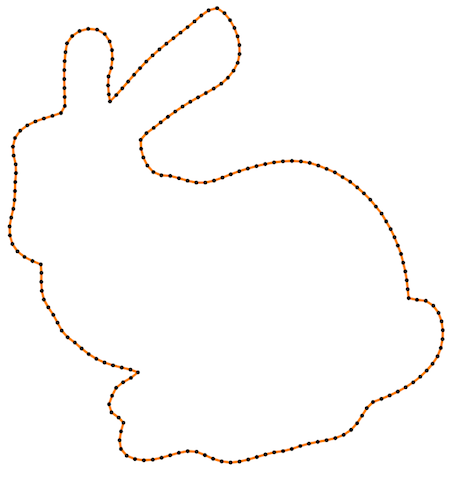 | 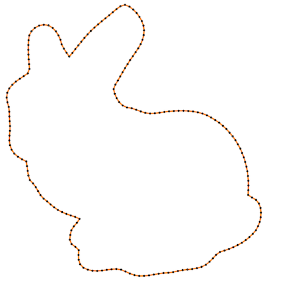 | 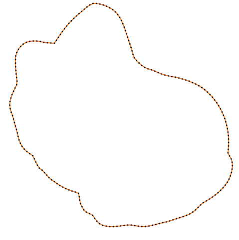 | 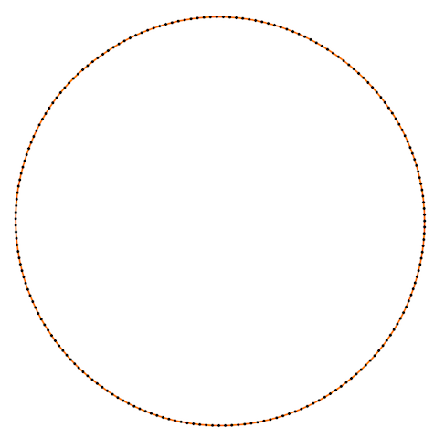 |
BBBBBBBBB Recently I came across an amazing paper “Robust fairing via Conformal Curvate flow” by K. Crane et al. at SIGGRAH 2013 and decided to reproduce the results. The basic idea of the approach is in usage of the principal curvatures instead of vertex coordinate itself for the solution of PDE. Roughly speaking, at each iteration for every vertex the curvature is computed, than modified according to the chosen PDE, and, finally, a new position is restored out of the curvature. So for instance, you want to edit your surface or curve using Willmore flow, traditionally it is evaluated in terms of positions of vertecies themself, it involves spatial dirivatives, Laplace-Beltrami operator depending on positions. Thus the implementation is complicated and the numerical scheme requires small time steps to converge. By constrast, reformulataion of the problem in terms of curvature gives a very simple numerical scheme, which works with much bigger time steps (in current work 108 times bigger). In addition to that, this reformulation allows to preserve desired properties of the manifold (e.g. length, angle).
Crane et. al. created a general framework and applied it to 1D manifolds (curves) and 2D manifolds (surfaces). I reproduced results only for the 1D case, since 2D is much more time consuming - working with group of quaternions, half-densities, and dirac operator - is too much for a hobby project.
Fist of all, I would recommend to read materals for the course in Discrete Differential Geometry provided by K. Crane. There one might find a very detailed explanation of the length-preserving curvature flow in the curvature space, described in the paper. In addition to that, there are formulas for the standard Willmore flow for the curve and nice scatches. You also might find some details in Crane’s dissertation, but primarily if you want to implement a 3D case (there is a discretization of the Dirac operator, explanation of the exterior calculus on quaternions, many proofs used for the theorems used in the paper, etc). At the moment of the writing this post, authors of the paper didn’t shared their implementation for the isometric curvature flow, so I implemented it by myself (but sometimes asking K.Crane about some details, he was very helful).
The text will be structures as follows. First, I will give basic definitions. Than I will describe the approach by Crane et al. and show some simulation results on the models provided by K. Crane. Finally, I will briefly describe a standard Willmore flow and show simulation result for comparison.
Definitions
Definition: , where M - (n-1)-manifold with boundary
is called immersion if
is injective map.
Definition: let f be an immersion of a manifold M into Euclidean space, and suppose that E is a real-valued function of f. Then a curvature flow is the solution to the partial differential equation
. We call E energy.
Common choices of energies are the Dirichlet energy and the Willmore energy
, where H is a mean curvature (for M without border). Further, we will work with Willmore energy. Further, Willmore energy is employed.
It is easy to show that energies can be rewritten as and
, where
denotes inner product in
.
denotes Laplace-Beltrami operator, note that it itself depends on the immersion f. It leads to non-linearity of the corresponding flow equations formulated in terms of immersions.
In their work Crane et al. created an implementation for both 1D and 2D manifold. I will consider Willmore flow only curves. Let describe the geometry of the curve via an immersion for interval
.
We will work with two definitions of energies - one to get a Willmore flow using a standard approach , another one is used for the conformal
Willmore flow
. The difference between them is in the second case it is a function of the curvature
rather than immersion f. It allows to solve simpler PDE, having a better convergence and also restore positions in a way that preserves desired properties.
Standard Willmore flow
First consider the solution using standard approach. Let introduce notation which will be used further: is a tangent vector,
is curvature,
denote Hodge star,
means a dual edge,
is an exterior angle for the dual edge, Hodge star on primal 0-form is given by
. We will use the fact that
to define
for the discrete curves:
.
Another important notation is a gradient with respect to the vertex p denoted by - consider a triangle with a fixed basement
and a vertex
opposite to the basement. Without goint into details the gradient will be written as follows:
A scheme of the proof might be found on the DDG course page. In order to implement the flow, one shall implement these formulas. In my case these formulas didn’t work as is, I added condition that if the angle is 0, than the gradient is 0, I also use absolute value of the angle. Finally, I suspect that there is a mistake somewhere in the gradient for the previous and the next vertices. However, the goal of having this method here is demonstrating how cumbersome it is and also to demonstrate that theis flow is much slower than the flow in curvature space. So since these formulas work for the square and bunny, it is enough.
At the end I would like to mention that the exterior angle should be in range .
It might be computed like that:
atan2(u.x * v.y - v.x * u.y, dot(u, v)). Curvature for this point is then just .
Length-preserving flow
If we consider an energy instead of
then the resulting flow is much simpler and works for bigger timesteps.
First give a continuum formulation. The gradient with respect to inner product is
,
thus the gradient flow is
. After modifying the curvature we can restore the angle
by integrating the curvature
. Having
we can calculate tangent vector and from that we can restore immersion
.
The discretization is the following:
In addition, we must take into account that the curve is closed, e.g. and
. Without providing a proof - it is equavalent to having the following conditions:
. For the descrete case, one need to work in a space
where n is the number of points on the curve
but with the inner product immersed by the function itself. It means that we need to create a diagonal mass matrix B where element on the diagonal are just
and when computing inner product use it
. The vectors we should orthogonalize are
where
anf
are x and y components of positions. At the end,
should be orthogonal to all other vectors.
The algorithm overview is presented below.
- Evaluate curvature
- Pick a desired flow direction
- Build a constraint basis
- Project flow onto constraints
- Take an explicit Euler step
- Recover tangents
- Recover positions
Note that the resulting flow is isometric by construction - we do that at two last steps.
Simulation results and comparison
The simulation results tell us that in case of the standard approach the biggest stable time step is while for Curvature flow in curvature space we have
.
So it is up to
times bigger! Not suprisingly you will wait forever to obtain the flow using standard approach (several minutes) while Crane’s et al. approach propagates the curve in a second or so.
Also Crane’s et al. approach gives isometric flow, while standard doesn’t. It might be seen on the figure below - point are distributed uniformly in the first case, and not uniformly in other:
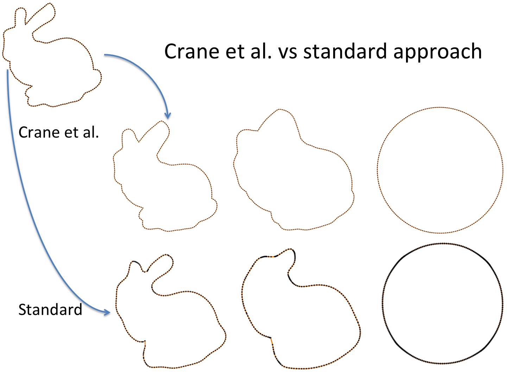
Finally, some more picture for the Isometric curvature flow:
| 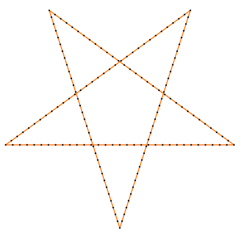 | 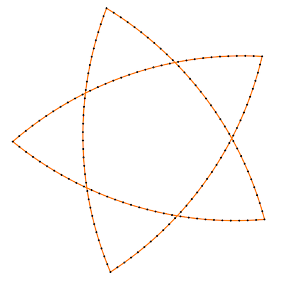 | 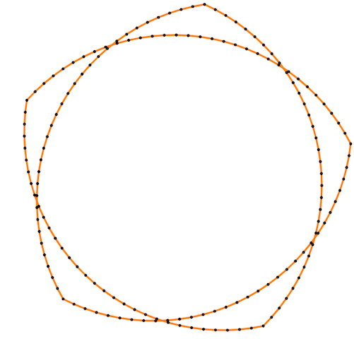 | 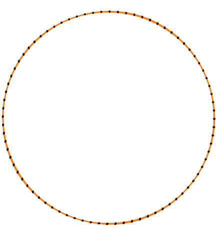 |
| 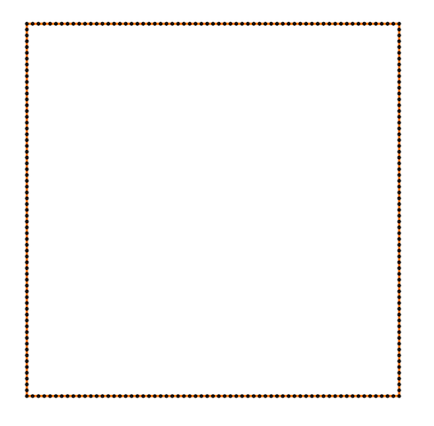 | 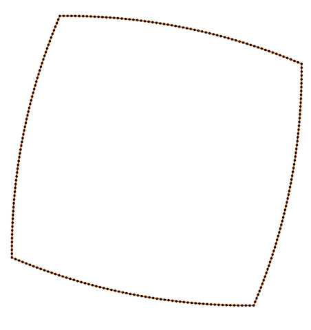 | 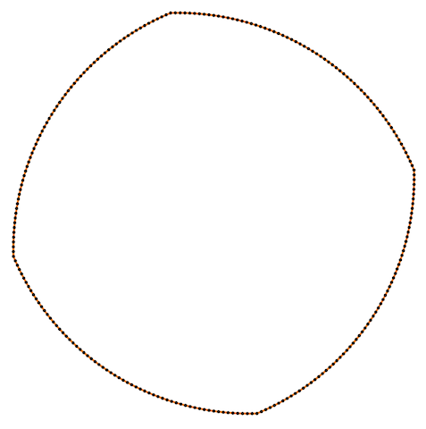 | 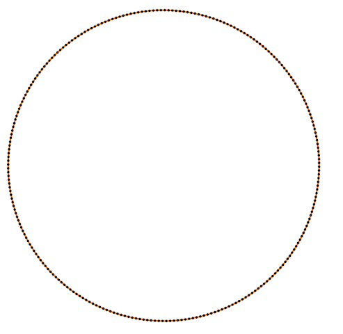 |
And one more for the standard one:
| 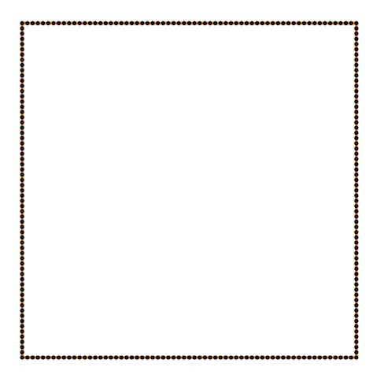 | 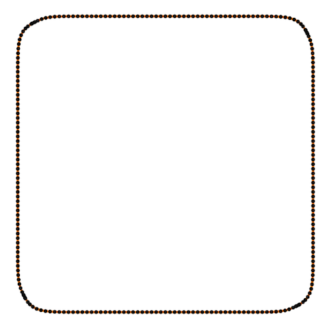 | 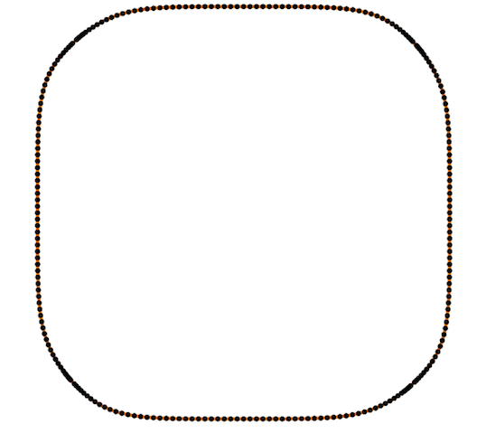 | 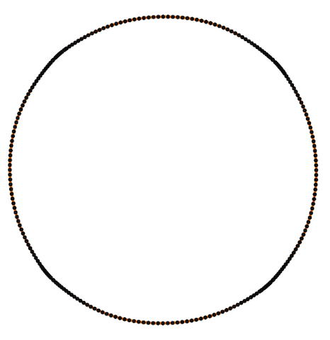 |